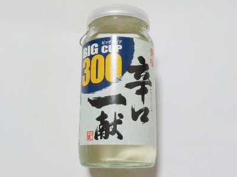
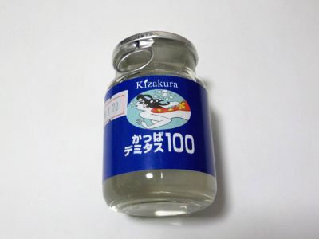
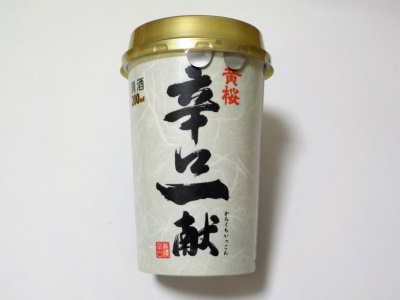
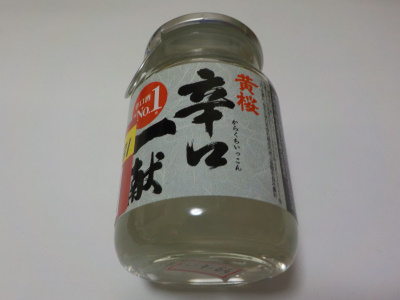

京都府京都市伏見区塩屋町223
更新日 : 2026/07/04

普通に美味しい辛口一献です。日本酒の辛口って表現がなんとも不思議なんですが、そういう文化なので仕方ないですね。
アルコールだとか雑味のトゲがなく、マイルドで飲みごこちが良く美味しい日本酒でした。
日々これを飲めばいいんじゃないの？とも思いますが、刺激を求めていろんなお酒を飲むんでしょうね。
おつとめ商品で169円で買いました。メーカーの参考小売価格は税別275円となっていました。
更新日 : 2023/01/22

小さい瓶の日本酒を買いました。ちょっと飲みたい時に丁度良さそう。
小さい瓶がゴミになっちゃうけど、それは大きい瓶でも缶でも同じことなので気にする必要はないかな。
コップを洗わないでいいのは楽でいいかな。
2022/10/16

以前飲んで美味しかったのでまた買いました。前は小さい瓶でしたが、今回は紙のカップです。
スッキリしてるんですけど、ちゃんとお米味とか甘さがあって美味しかったです。このお酒は大きい紙パックを買って常備してもいいかなと思いました。
2022/08/27

100ミリリットル入りで小さな瓶のお酒です。普段なら買わないサイズのお酒ですが、4割引きだったので買いました。
感想ですが、香りがいいし、味も美味しかったです。4割引きじゃなくても買っていいって思いました。
ちょびっとだけ美味しいお酒を飲みたい時に丁度いい商品ですね。
【おいしいものを食べよう。】【たくさん寝よう。】
【ソロ活をしよう!】【季節感のあることをしよう。】【動画視聴はほどほどに。】【当サイトの全てのコンテンツは無断転載禁止です。】